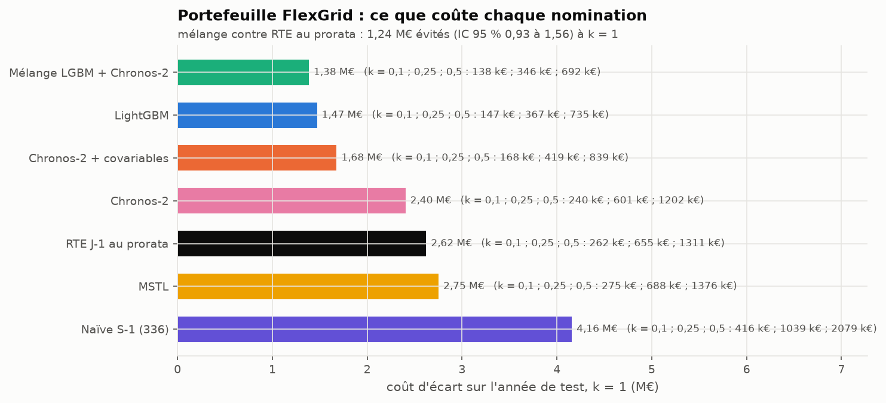
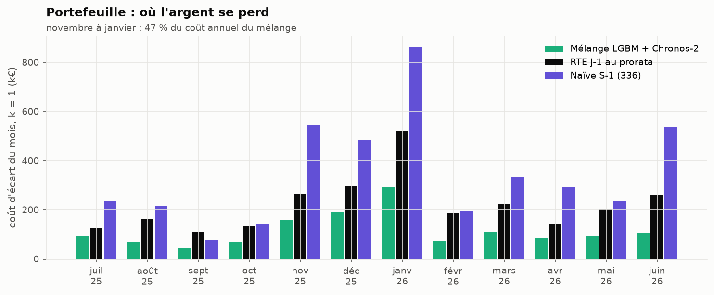
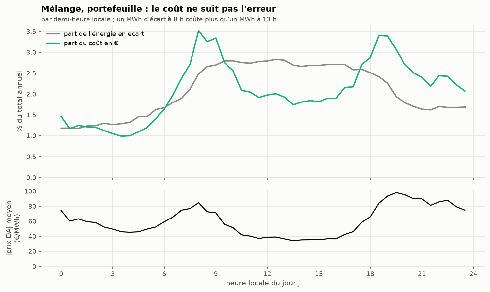

Du MW à l’euro
Le brief demande un « gain € estimé », avec le coût défini comme écart × prix. Les nombres viennent de uv run flexgrid tables (results/cost_portfolio.csv, results/verdicts_portfolio.csv, results/cost_national_scaled.csv) et les figures de uv run flexgrid figures-results.
La règle de calcul, et ses limites
- Nomination = la médiane du modèle. Écart (MWh) = |réalisé − nomination| × 0,5 h, pour chaque pas du jour J.
- Coût = écart × |prix day-ahead| × k. k = 1 est la définition du brief : la valeur de l’énergie mal placée. C’est une borne haute. Un vrai coût d’écart est un écart de prix (prix de règlement des écarts moins prix day-ahead), que l’on ne peut pas télécharger sans compte (SPEC, angle mort 8). Les scénarios k = 0,1, 0,25 et 0,5 donnent un ordre de grandeur plus réaliste.
- Le coût est proportionnel à k : le classement des modèles et les ratios ne dépendent pas de k. Seuls les montants en dépendent.
- Hors champ : le foisonnement avec d’autres portefeuilles du même BRP, les écarts de signe opposé qui se compensent dans un périmètre, et un éventuel ajustement intrajournalier. Le chiffre est un coût avant toute optimisation de l’équilibre.
Le portefeuille FlexGrid, sur l’année de test

| Nomination | Écart (MWh/an) | Coût k = 1 | k = 0,1 | k = 0,25 | k = 0,5 |
|---|---|---|---|---|---|
| Mélange LightGBM + Chronos-2 | 22 514 | 1,38 M€ | 138 k€ | 346 k€ | 692 k€ |
| LightGBM | 23 146 | 1,47 M€ | 147 k€ | 367 k€ | 735 k€ |
| Chronos-2 + covariables | 27 682 | 1,68 M€ | 168 k€ | 419 k€ | 839 k€ |
| RTE J-1 au prorata | 46 215 | 2,62 M€ | 262 k€ | 655 k€ | 1 311 k€ |
| MSTL | 45 089 | 2,75 M€ | 275 k€ | 688 k€ | 1 376 k€ |
| Naïve S-1 | 62 827 | 4,16 M€ | 416 k€ | 1 039 k€ | 2 079 k€ |
Coût évité par le mélange, sur l’année (k = 1, IC 95 % par blocs de 7 jours) :
| contre | € évités | IC 95 % | à k = 0,25 |
|---|---|---|---|
| RTE J-1 au prorata | 1,24 M€ | [0,93 ; 1,56] M€ | 0,31 M€ |
| MSTL (meilleur modèle simple en MAE) | 1,37 M€ | [1,02 ; 1,67] M€ | 0,34 M€ |
| Naïve S-1 | 2,77 M€ | [1,97 ; 3,59] M€ | 0,69 M€ |
Lecture pour un BRP de 800 GWh : passer de la méthode sans modèle (≈ 6 % de MAPE) au mélange divise par deux l’énergie en écart, soit de l’ordre de 0,1 à 0,6 M€ par an selon la pénalité réelle, et 1,2 M€ sous la définition du brief. L’intervalle de confiance est large (± 25 %) parce qu’une année ne contient qu’un hiver, et que l’hiver fait la moitié du coût.
Où l’argent se perd

De novembre à janvier, trois mois font 47 % du coût annuel du mélange : la consommation et l’erreur montent avec le chauffage, et le prix monte avec elles. Janvier seul (293 k€) coûte plus que tout l’été de juin à août (269 k€).
Le coût n’est pas un MAE déguisé

L’erreur du mélange est étalée sur la journée de bureau. Son coût, lui, se concentre sur les deux bosses du prix (8 h-9 h et 18 h-20 h). Le creux solaire de midi rend bon marché une erreur de mi-journée.
Conséquence mesurable : RTE au prorata se trompe surtout en milieu de journée, aux heures bon marché. Son MWh d’écart coûte 56,7 € en moyenne, contre 61,5 € pour le mélange. Le mélange évite donc 51 % de l’énergie en écart, mais seulement 47 % du coût. Le même effet existe au national (ci-dessous). Un modèle qui viserait le coût plutôt que le MAE pondérerait ses erreurs par le prix attendu. Ce n’est pas fait ici : c’est une suite naturelle.
Pourquoi on ne chiffre pas le national mis à l’échelle
Le SPEC (angle mort 6) annonçait que le national ramené à 800 GWh sous-estimerait le coût d’un portefeuille réel. Mesuré (facteur d’échelle 0,0018) :
| Mélange | Écart (MWh/an) | Coût k = 1 |
|---|---|---|
| National mis à l’échelle de 800 GWh | 14 155 | 0,92 M€ |
| Portefeuille FlexGrid réel (815 GWh) | 22 514 | 1,38 M€ |
Le national moyenne des millions de sites : relativement à son énergie, il est 1,6 fois plus facile à prévoir. Chiffrer un portefeuille sur le national ferait donc sous-estimer le coût d’un tiers.
Au national, le même décalage prix/erreur joue contre nous : le mélange a 36 % d’écart en moins que RTE brute en MWh, mais 17 % seulement en € (0,92 M€ contre 1,12 M€ mis à l’échelle). Le biais de RTE culmine à midi, au creux solaire du prix (bloc A).